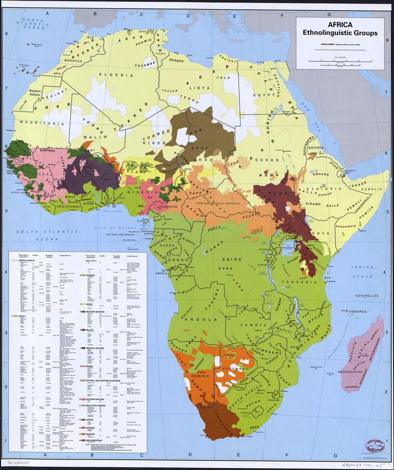

Pietų Afrika
Kultūrų ir kraštovaizdžių įvairovė, atskleidžianti turtingą paveldą ir modernumą.

Kultūrų ir kraštovaizdžių įvairovė, atskleidžianti turtingą paveldą ir modernumą.
Pietų Afrikoje pagarba vyresniems yra labai svarbi. Jaunimas dažnai sveikinasi su vyresniais žmonėmis mandagiai ir su pagarba. Kartais net nusilenkia ar naudoja pagarbias frazes – tarsi sakytų: „Ačiū, kad esate mūsų išminties šaltinis!“
Jei užsuki į svečius, nesitikėk, kad užteks pasakyti „labas“ tik šeimininkui – čia įprasta pasisveikinti su kiekvienu kambaryje. Net jei tai reiškia 10 spaudžiamų rankų ir 10 šypsenų, tai – pagarba ir draugiškumo ženklas.

Pietų Afrikoje draugai gali tiesiog užsukti be įspėjimo – juk kam tie pranešimai, kai nori tiesiog pabūti drauge? Čia tokie vizitai reiškia: „Galvojau apie tave – atėjau kavos!“
Svečias išėjo? Palydėk jį iki pat vartų ar automobilio. Tai labai graži tradicija, parodanti dėmesį ir rūpestį – lyg sakytum: „Ačiū, kad buvai – saugios kelionės!“

Pietų Afrikoje vakarienė – tai ne tik maistas, tai bendravimo metas. Po dienos darbų susirenka visa šeima, draugai, gal net kaimynai. Tai šiltas, sotus ir jaukus laikas.

„Braai“ – tai tikra kultūros širdis. Tai ne tiesiog grilis – tai renginys! Visi atsineša ką nors – nuo dešrelių iki marinuotų daržovių – ir šnekučiuojasi aplink ugnį. Skamba muzika, juokas, dalijamasi istorijomis – tikras Pietų Afrikos gyvenimo skonis!
Pietų afrikiečiai mėgsta bendrauti – ar tai būtų pokalbis eilėje, ar draugiškas pasilabinimas gatvėje. Jie atviri, šilti ir labai svetingi – tad jei užkalbins tave nepažįstamasis, nenustebk – jis tiesiog nori pabendrauti!

Žmogaus teisių diena švenčiama kovo 21 d., skirta pagerbti kovą už žmogaus teises ir paminėti Š arpevilio žudynes. Minima tylos minute ir renginiais, skirtais žmogaus teisėms pagerbti.
Didysis penktadienis švenčiamas prieš Velykas, krikščioniška rimties ir apmąstymo diena. Vyksta krikščioniškos pamaldos ir procesijos.
Š eimos diena švenčiama pirmadienį po Velykų, skirta laikui su šeima ir poilsiui. Vyksta šeimos susibūrimai ir iškylos gamtoje.

Laisvės diena švenčiama balandžio 27 d., minimos pirmųjų demokratinių rinkimų 1994 m. metines. Rengiami oficialūs renginiai, koncertai ir vėliavos pakėlimas.

Jaunimo diena švenčiama birželio 16 d., pagerbiami 1976 m. Soweto protestuose žuvę moksleiviai. Vyksta renginiai ir šventės jaunimui.
Moterų diena švenčiama rugpjūčio 9 d., pagerbiamos moterys ir jų kova už lygybę. Vyksta mitingai ir renginiai moterų lygybei pagerbti.
Paveldo diena švenčiama rugsėjo 24 d., pagerbiami Pietų Afrikos kultūriniai ir istorijos paveldo aspektai. Rengiami kultūriniai renginiai ir tautinių drabužių dėvėjimas.
Susitaikymo diena švenčiama gruodžio 16 d. su taikos ir susitaikymo renginiais, kai kurie žmonės dalyvauja pamaldose ir istorinių įvykių minėjimuose.
Š tai keletas dažnai naudojamų frazių Pietų Afrikoje! Š itai tau padės nepasimesti pokalbių metu. Tačiau šiomis frazėmis reikia naudotis atsargiai, nes, jei netyčia persistengsi, gali pasirodyti nemandagiai.
Reikšmė: kalbėti nemandagiai, ginčytis.
Panaudojimas: „Don't tune me like that!“
Gana „gatvinis“ posakis, dažniau vartojamas tarp jaunimo ar neformaliame kontekste.
Patarimas! Venkite vartoti su nepažįstamais ar vyresniais žmonėmis – tai gali nuskambėti įžeidžiančiai.
Reikšmė: apkalbos, apkalbėti kitus.
Panaudojimas: „She was skinnering about her boss.“
Žodis kilęs iš afrikanso, Pietų Afrikoje labai įprastas tarp draugų.
Patarimas! Naudokite tik neformaliame kontekste, nes tai reiškia neigiamą elgesį.
Reikšmė: viskas gerai, aišku, atsisveikinimas.
Panaudojimas: „Okay, see you later - sharp sharp!“
Labai draugiška ir pozityvi frazė, dažnai girdima kasdienėje kalboje.
Patarimas! Tai labai vietinis žargonas – kitose šalyse žmonės gali nesuprasti.
Reikšmė: "eikime valgyti", "valgykime".
Panaudojimas: „I'm starving - let's chow!“
„Chow“ yra bendrinis žodis maistui (panašiai kaip „grub“).
Patarimas! Tai neformali frazė – nenaudokite oficialiuose pokalbiuose ar verslo aplinkoje.
Reikšmė: "iki pasimatymo", "pasimatysime".
Panaudojimas: „Alright, I'm off. Check you later!“
Tai trumpas ir draugiškas atsisveikinimas, dažnas tarp jaunimo.
Patarimas! Už Pietų Afrikos ribų žmonės gali nesuprasti, kad tai reiškia „iki“.
Reikšmė: draugas, bičiulis, draugužis.
Panaudojimas: „Hey chommie, how's it going?“
Žodis kilęs iš afrikanso („tjommie“), labai šiltas ir draugiškas.
Patarimas! Naudokite su artimais žmonėmis – tai labai šnekama ir familiaru.
Reikšmė: brolis, draugas, bičiulis.
Panaudojimas: „Thank's for the help, boet!“
Taip kreipiamasi į draugus ar brolius. Tai labai paplitęs Pietų Afrikos žodis.
Patarimas! Vyrų tarpusavyje vartojamas žodis – su moterimis gali skambėti keistai.
Reikšmė: nusivylimas, netikėjimas.
Panaudojimas: „Ach man, not again!“
Tai emocinis intarpas iš afrikanso, dažnas kasdienėje kalboje.
Patarimas! Naudojamas kaip šnekamoji emocinė reakcija – geriausiai suprantamas Pietų Afrikoje.
Reikšmė: smagiai praleisti laiką, linksmintis.
Panaudojimas: „We had such a jol at the party last night!“
Tai labai populiarus Pietų Afrikos žodis, dažnai naudojamas apibūdinti linksmas akimirkas su draugais.
Patarimas! Naudojama tik neformaliuose pokalbiuose – kitose šalyse gali būti nesuprasta, todėl geriau vartoti „had fun“.


Štai keletas dalykų, kurių niekada nederėtumėte daryti, jei norite susilieti ir išvengti nepatogių situacijų. Vadovaukitės šiais patarimais, kad padarytumėte puikų įspūdį!
| Negalima: | Kodėl? | Ką daryti vietoj to: | |
|---|---|---|---|
| Ignoruoti kultūrinės įvairovės | Pietų Afrika vadinama „Tautų vaivorykšte“ – čia daugybė tautų, kalbų ir tradicijų. Bendri stereotipai ar apibendrinimai gali būti įžeidžiantys. | Būk atviras ir gerbk skirtingas kultūras – išmok bent vieną sveikinimą vietine kalba! |  |
| Juoktis iš akcentų ar kalbos skirtumų | Daugelis pietų afrikiečių kalba keliomis kalbomis. Tyčiojimasis iš akcentų laikomas labai nemandagiu. | Klausyk atidžiai ir venk pataisinėjimų. | |
| Vėluoti į oficialius susitikimus | Nors asmeniniams susitikimams pietų afrikiečiai dažnai žiūri lanksčiai, versle punktualumas yra svarbus. Versle vėlavimas gali būti suprastas kaip nepagarba. | Būk laiku arba pranešk, jei vėluoji. |  |
| Demonstruoti per didelio familiarumo su nepažįstamais | Tai gali būti suprasta kaip įsiveržimas į asmeninę erdvę. Pvz., rankos paspaudimas ar apkabinimas per anksti. | Palauk, kol žmogus pirmas inicijuos kontaktą. | |
| Juoktis iš tradicinių drabužių ar papročių | Kai kurios gentys dėvi išskirtinius drabužius ar puošmenas. Tai yra jų tapatybės ir pasididžiavimo dalis. | Rodyk pagarbą ir pasidomėk, ką jie reiškia. |  |
| Nevadinkite visų afrikiečių „afrikiečiais“ kaip vienalytės grupės | Afrika – milžiniškas, labai įvairus žemynas, o Pietų Afrika – tik viena iš daugelio šalių. | Būk konkretus – kalbėk apie „pietų afrikiečius“, „zulusus“, „xhosa tautą“ ir pan. |  |
| Vartoti pasenusių ar įžeidžiančių terminų apie rasę | Dėl apartheido istorijos šalyje rasiniai klausimai labai jautrūs. | Kalbėk pagarbiai ir sąmoningai, venk žargonų ar istorinių įžeidimų. |